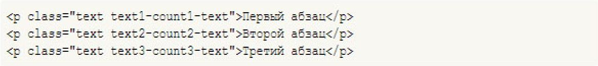
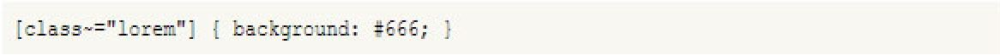
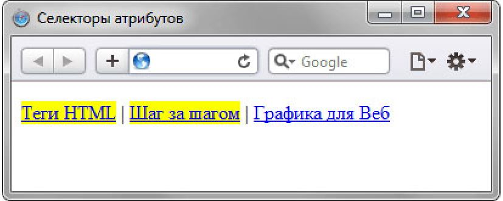

Вопросы для проверки
- Необходимо задать цвет фона у текстого поля. Какой стиль для этой цели подойдёт?
- INPUT[type="text"]{background:#rfwf;}
- INPUT[type="text"]{background:#rfwf;}
- INPUT[type="text"]{background:#rfwf;}
- INPUT[type="text"]{background:#rfwf;}
- INPUT[type="text"]{background:#rfwf;}
- Какой стиль необходимо использовать, чтобы изменить цвет текста только у второго абзацца?
- P[class|="text2"]{color:red;}
- P[class^="text2"]{color:red;}
- P[class~="text2"]{color:red;}
- P[class*="text2"]{color:red;}
- P[class$="text2"]{color:red;}
- Какой стиль необходимо использовать, чтобы изменить цвет текста только у второго абзацца?
 